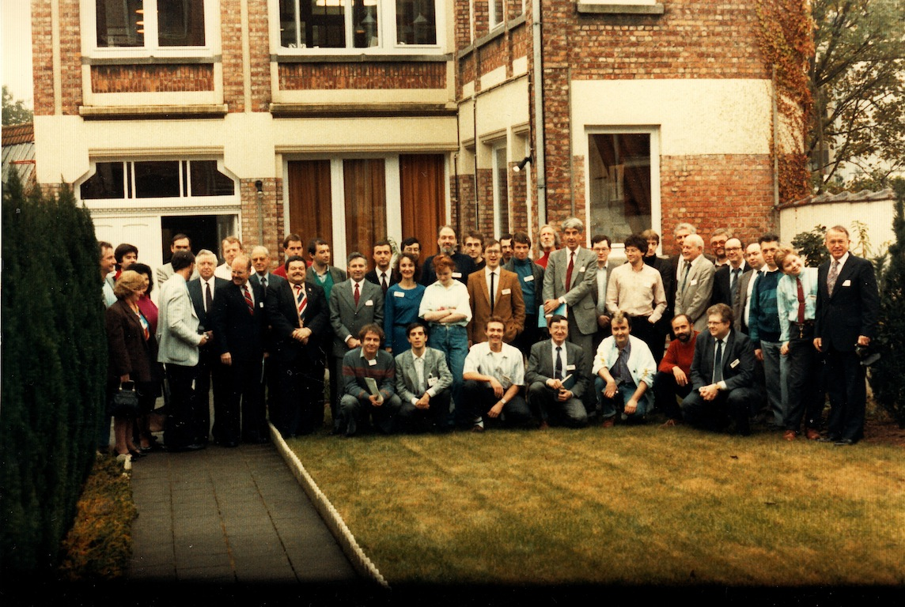

Récupération par les États-Unis de 7 corps suite à un crash en Afghanistan.
Photo des participants au congrès devant les locaux de la SOBEPS. On y
distingue notamment Michel Bougard, Patrick Ferryn,
Auguste Meessen, Richard F. Haines, Jean-Luc Rivera, Bertrand Méheust, Edoardo Russo,
Pierre Lagrange, Jaques Scornaux, Lucien Clerebaut,
Jacques Vallée, Vladimir Rubtsov, Hilary Evans,
Robert Dehon

À Bruxelles (Belgique), 1er congrès ufologique européen.
La navette russe Bourane effectue un vol sans pilote.
2 chasseurs à réaction sont "enlevés" par un ovni au-dessus de l'île de Porto Rico. Un
événement semblable - mais bien distinct - sera observé le 28 décembre.
1ère sortie dans l'espace d'un européen (Jean-Loup Chrétien).